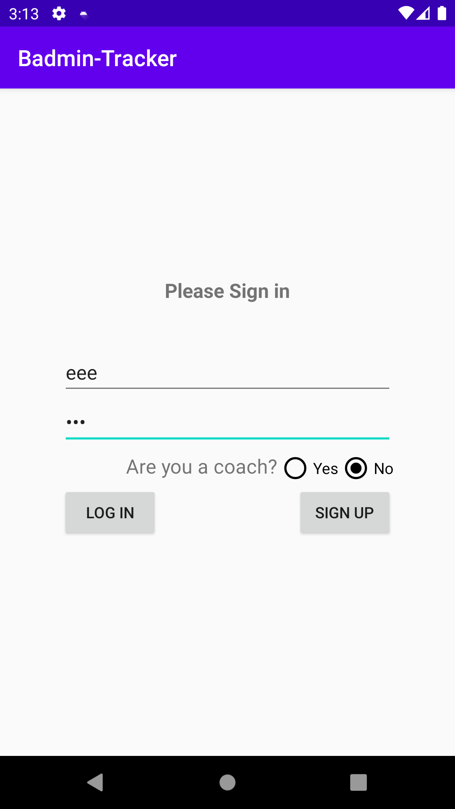
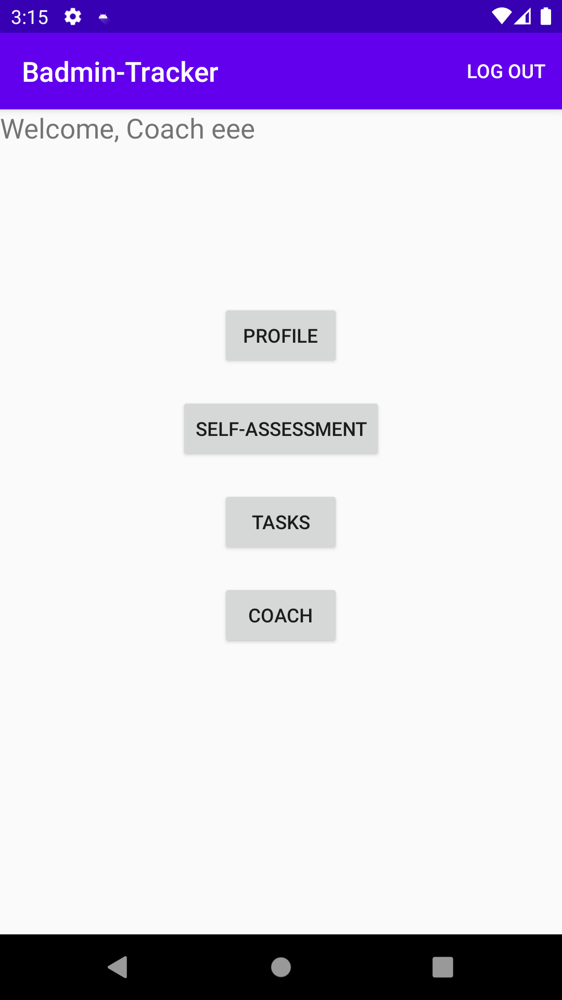
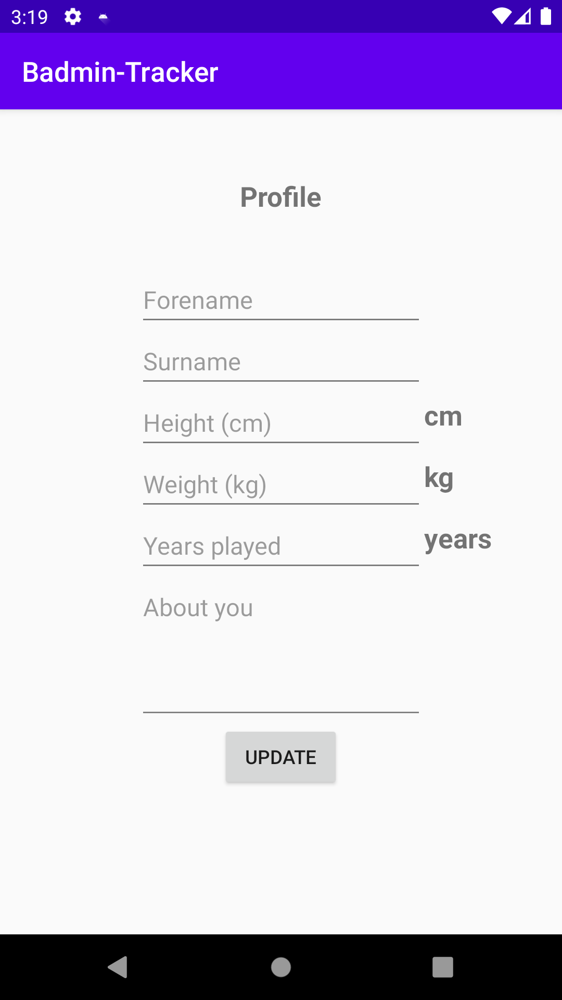
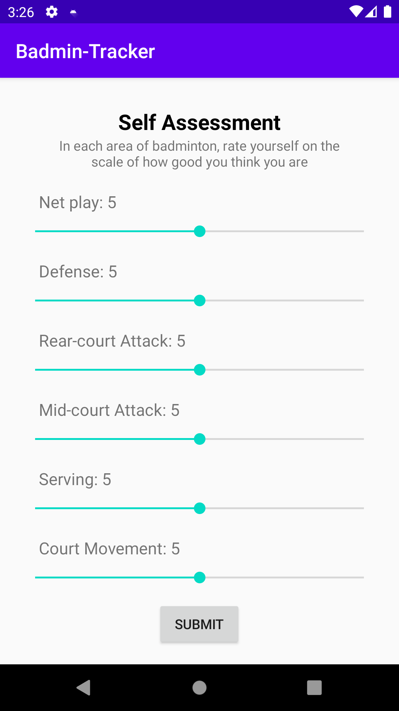
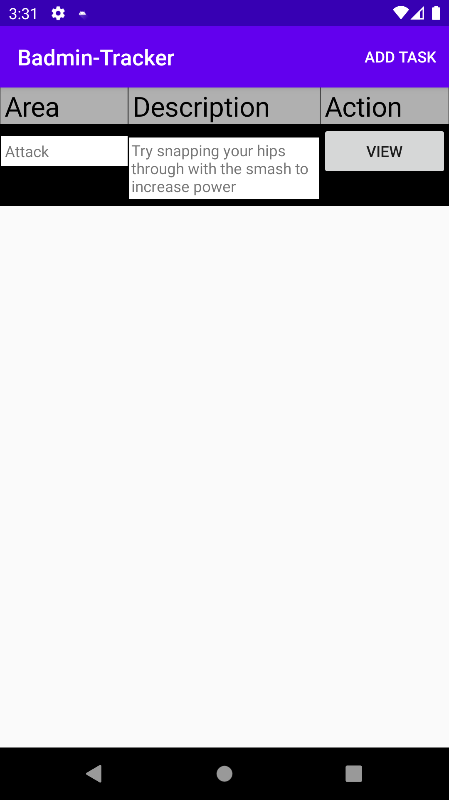
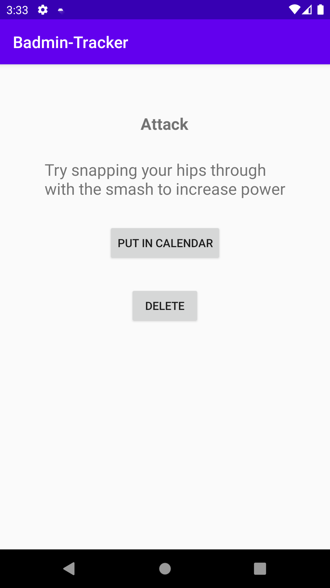
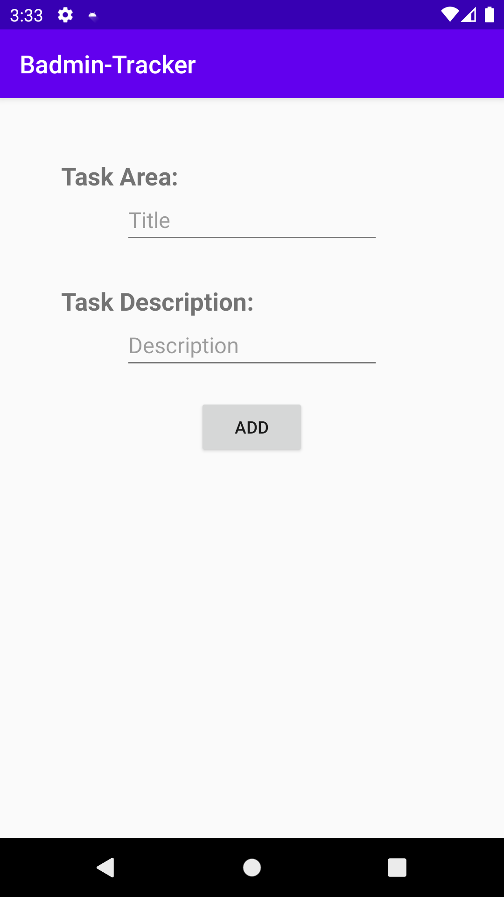
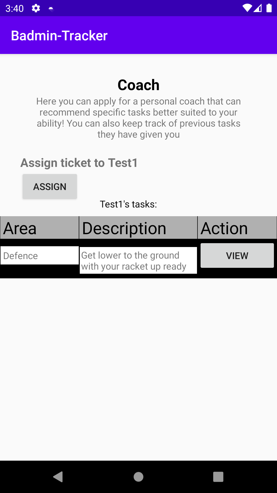
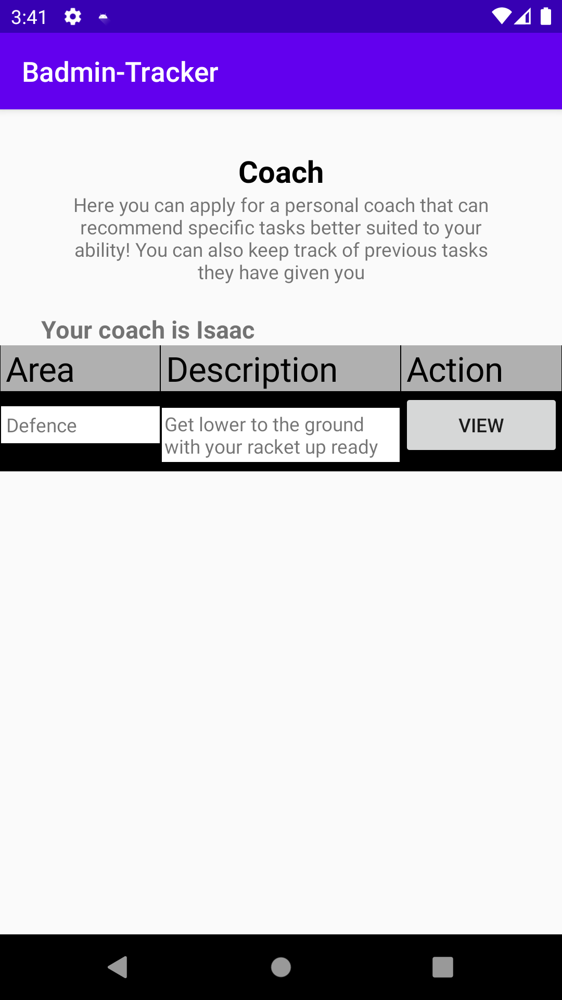
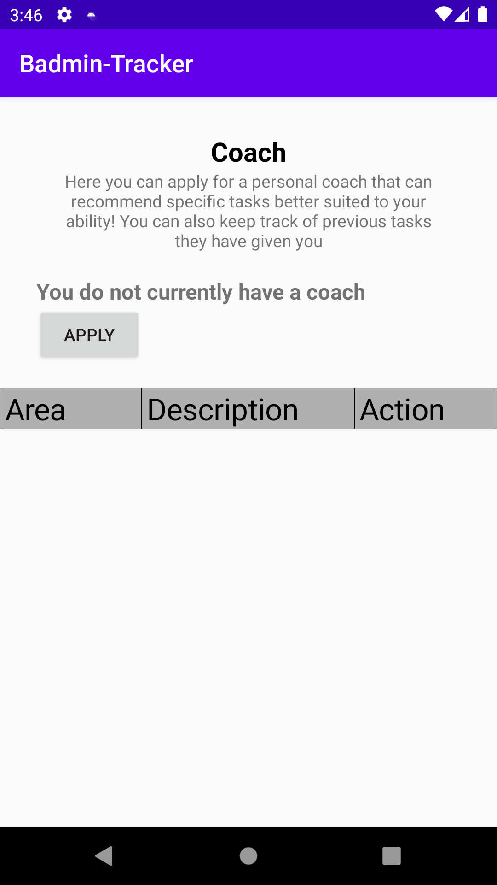

Log in section
This section is the main landing page for the user, where they can log in using a pre-existing account or by registering a new account.
When registering a new account, they can specify whether they are a coach or not, information which we will see be used later.
There should be an account pre-made, with
username = "eee" and password = "eee".
If this does not work, then the user can simply register this as an account, and choose if they want to be a coach or not with the radial buttons.
Once logged in, the user will be automatically logged in whenever accessing the app, until they log out.
Main Menu section
This is the main menu. It's reached after logging into the app, and the user returns here after finishing all other activities.
From here, the user can go to the following activities: Profile, Self-Assessment, Tasks and Coach.
On the Action bar there is also a button that allows the user to log out.
Profile section
In the profile section, the user can enter their own personal information and have it stored on the device in the database.
The update button will take the input data and save it in the database so that it's all there next time they go to the profile section.
To leave this section, the user simply presses the Android Back button at the bottom of the screen.
Self-Assessment section
In this section, the user can assess their own current ability at badminton, and have it stored in the database.Therefore they can keep track of their own improvement over time and see the change.
Once the Submit button is pressed, the sliders are saved to be used again later.
Again, the user can leave the page using the device's back button.
Tasks section
This section is for displaying and creating new tasks for the user.
The page is a table, displaying all tasks the user has created and hasn't yet completed.
When the View button is pressed for a given task, it loads the task in another page for easier viewing, and allows the user the option of deleting the task, or adding it to their calendar - where they would then be taken to.
The user can also click the Add Task button in the action bar at the top. This will take them to a separate page where they can input the task area and description themselves, before returning to the Tasks table.
The Tasks table updates with every addition or removal that is made.
As usual, the user can leave the page with the device's back button.
Coach section
This section is different depending on whether the user is a coach or not:
Coach:
If the user is a coach, then they are displayed with a table that holds all tasks they have assigned their "player".
When the Assign button is pressed, they are taken to the same Add Task page seen in the Tasks section. Here the coach can create a task that is then assigned to their player, and shown in both the coach and the player's tables.
The same task viewer page is used for each task's View button.
Not a Coach:
If the user is not a coach, but they have a coach assigned, they will see the table of tasks that have been assigned to them by their coach.
They will be able to view each task with the View button, that takes them to the same task view page as before.
However if the user is not a coach, but doesn't yet have a coach assigned to them, they will just see a message telling them they don't have a coach, and an admin will soon allocate them one.
